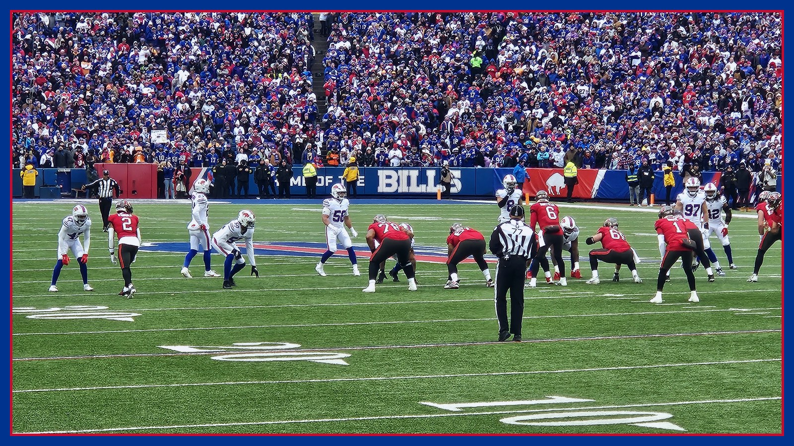

Everybody practiced: Benford returns, Kincaid trends up, and Buffalo's final Chiefs report lands today
All 14 injured Buffalo Bills participated in Tuesday's walkthrough, per Bills On SI — Christian Benford (groin) returned as a limited participant, Spencer Brown (back) went full, and Dalton Kincaid (thumb/ankle) stayed limited and thinks he will be ready Thursday, per WGRZ's Jon Scott via Bills On SI. Wednesday's final designations are the last word before Thanksgiving night vs Kansas City.

Fourteen names opened the week on Buffalo's injury report, and on Monday the list read like a problem: cornerback Christian Benford was the lone Bill listed as a non-participant on an estimated report, per Bills On SI. Twenty-four hours later, the same list reads like a rally. The Buffalo Bills held a walkthrough on Tuesday, and all 14 injured players participated in some capacity, per Bills On SI. Head coach Joe Brady put it this way, per the same reporting: "I know it's walkthrough today, but everybody will be out there today. We'll kind of just continue to evaluate it through Thursday. Obviously, not practicing today, but everybody seems like they're in as good of a place as we can be right now." A walkthrough is not a full practice, and nobody in Orchard Park is treating it like one — the final game designations are due Wednesday, and they are the last official word before the Kansas City Chiefs (8-2) visit on Thanksgiving night, Thursday, Nov. 26 at 8:20 PM ET at Highmark Stadium on NBC. But on a four-day week, Tuesday was the best injury news Buffalo could have gotten.
The headline name is Benford. The starting cornerback was upgraded to a limited participant on Tuesday after being estimated as a non-participant on Monday, per Arrowhead Pride's Tuesday injury report. It is his first practice work of any kind since he injured his groin in the second half against the New York Jets on Nov. 15 — he did not practice at all last week and was ruled out Friday for the Miami game, per Bills On SI. The caution is real and it is on the record: Bills On SI noted it seems overly optimistic to expect Benford to fully recover from a groin issue in 11 days, and the team is taking a day-by-day approach. Limited on Tuesday is not cleared for Thursday. But a defense that started rookie Davison Igbinosun, Maxwell Hairston and a practice-squad elevation of Tre'Davious White against Miami just watched its top corner take the first step back — two days before Patrick Mahomes arrives with 13 touchdown passes and no interceptions across his last four games, per NFL on CBS via Bills Wire.
Tight end Dalton Kincaid is trending the same direction. Kincaid was a limited participant again Tuesday after being estimated as limited Monday, per Arrowhead Pride's report, in his first practice work since missing a game for the first time this season — he sat out the Miami win with thumb and ankle injuries after carrying a doubtful designation, per Bills On SI. Brady answered "yeah" last week when asked if Kincaid was close to being available against the Dolphins, per Bills On SI, and Kincaid himself thinks he will be ready to play Thursday night, per WGRZ's Jon Scott via Bills On SI. Linebacker Dorian Williams has been a limited participant all week after missing the Miami game with a calf injury, per Arrowhead Pride. Kincaid is Buffalo's leading receiver, and Williams was in the middle of a 61-tackle season before the Jets game ended his afternoon. Neither man is designated yet. Both men are moving toward the field instead of away from it, which is more than Buffalo could say on Friday.
The offensive line may have gotten the quietest good news of the day. Right tackle Spencer Brown was upgraded to a full participant Tuesday after being estimated as limited Monday with a back injury, per Arrowhead Pride, and Brown addressed reporters Tuesday without giving any reason to think he will not be available, per Bills On SI. Right guard O'Cyrus Torrence (ankle) remained limited — he popped up on Monday's report one day after playing 99 percent of the offensive snaps against Miami, per Bills On SI — and edge rusher Greg Rousseau, a new name Monday with a back issue, was limited while entertaining a media scrum after Tuesday's walkthrough and did not appear in any abnormal discomfort, per Bills On SI. On a night when the forecast is calling for Buffalo to run the football and protect it, a starting right side trending toward full strength is not a footnote. It is the game plan's foundation.
Kansas City's report moved, too. Running back Kenneth Walker III practiced on a limited basis Tuesday for the first time since his groin injury, per Arrowhead Pride — he has missed two straight games, and backup Emmett Johnson has exceeded 100 rushing yards and scored four touchdowns in his absence, per USA TODAY. Mahomes is on the Chiefs' report with knee and elbow issues but was listed as a full participant and is not expected to receive a game designation, per Heavy via SportsHub. And then there is the third opponent on the field Thursday: the weather. The National Weather Service expects a soaking rain to spread across western New York on Thursday with peak wind gusts of 35 to 40 mph possible Thursday afternoon and night, per the Democrat and Chronicle, a low near 35 with 1 to 2 inches of rain possible, per SportsHub, and AccuWeather RealFeel temperatures in the 20s throughout the game, per the Democrat and Chronicle. A snow game is not expected — this is a rain-and-wind game, the kind that shortens throws, tests ball security and rewards the team that can hand off and hold on.
The stage does not need inflating. Thursday is the first Thanksgiving home game in Bills history and the first holiday game at the new Highmark Stadium, per USA TODAY. Buffalo (9-1) holds the AFC's top spot, Kansas City (8-2) sits a game back, and according to the New York Times Playoff Predictor cited by the Bills' official site, Buffalo's chance at the No. 1 seed sits at 42 percent today — a win Thursday lifts it to 57 percent, a loss drops it to 20 percent. The football test inside the stakes is specific: Buffalo's offense went 2-for-5 in the red zone against Miami and settled for field goals, per the Bills' official site, and now faces Kansas City's top-ranked red zone defense, which has surrendered touchdowns on just 36 percent of red-zone trips this season, per the same preview. Wednesday's final report will give Benford, Kincaid, Williams, Torrence and Rousseau their official designations, and Thursday's inactives, about 90 minutes before kickoff, will settle what is left. Tuesday said everybody is coming. Wednesday decides who actually dresses. Go Bills — and get the final Chiefs designations and every Thanksgiving update in your inbox with The BNC Blitz.